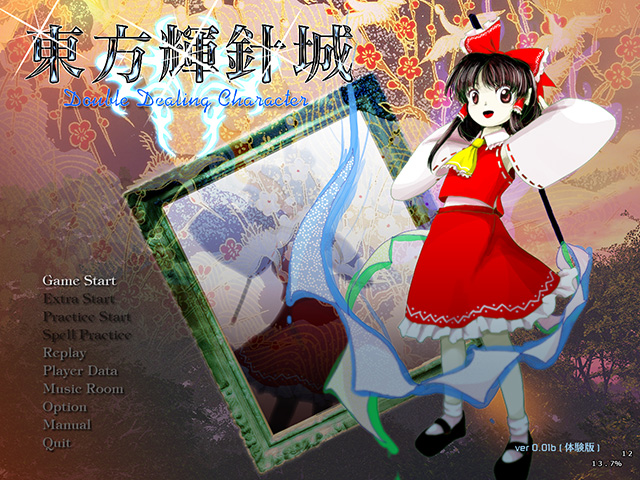

暴れる妖怪騒ぎはあちこちで起こっていた。 勝手に動き出す道具も散見される。 一体何が起こっているのだろうか。 霊夢達にも、暴れている妖怪達にも判らない。 次第に不安の雲が空を覆い始めていた。 強い風に軋む巨大建造物の音。 幻想郷に不協和音が鳴り響いた。 東方輝針城 〜 Double Dealing Character. |

| 東方Project 第十四弾!! とうほうきしんじょう 「東方輝針城 〜 Double Dealing Character.」は、平和ボケした人間達が、 暴れる妖怪相手に嬉々とするシューティングゲームとなっています。 ＊このゲームには過激な弾幕シーンが含まれております 小さなお子様や、弾幕アレルギーの方はアレしてください。 |
・マニュアル
| ・ダウンロード（体験版、アップデートパッチ） | |
| 動作環境 | |
|---|---|
| 必須環境 | |
| ＯＳ | Windows VISTA/7/8 DirectX ランタイム (June 2010) 以降の最新版がインストールされていること |
| ＣＰＵ | 十分な速度を持った |
| ビデオカード | DirectGraphic 対応の高速なビデオカード(推奨 VRAM 256M以上) |
| 推奨環境 | |
| サウンド | Direct Sound対応のサウンドカード |
| その他 | パッドコントローラ ある程度の弾幕免疫 傲慢な心（推奨） |